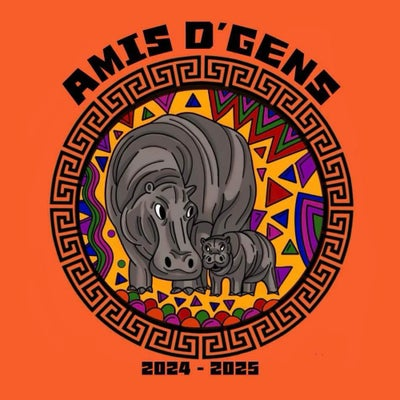

Nos partenaires
Ils nous font confiance et nous soutiennent dans nos actions

Association de solidarité internationale
Ensemble pour les enfants du Bénin 🇧🇯
Amis D'Gens est une association dans le domaine de solidarité internationale, engagée aux côtés de la ville de Lokossa au Bénin, des centres de santé locaux et du centre d'accueil La Providence. À but non lucratif, elle est composée majoritairement d'étudiants nancéiens en médecine, ergothérapie, kinésithérapie ainsi que d'étudiants infirmiers.
Histoire de l'associationDepuis 2007, nous entretenons des liens avec le centre d'accueil « La Providence », situé dans la ville de Lokossa au Bénin.
Chaque année, une part de l'argent que nous récoltons est directement reversée au centre. Nous couvrons les besoins scolaires, alimentaires et de santé des enfants qui y sont accueillis.
Découvrir le centre d'accueil Rencontrer les enfantsAnnée de début
Années d'engagement au sein de ce centre
Ils nous font confiance et nous soutiennent dans nos actions
Chaque don compte et améliore concrètement la vie des enfants du centre d'accueil La Providence.